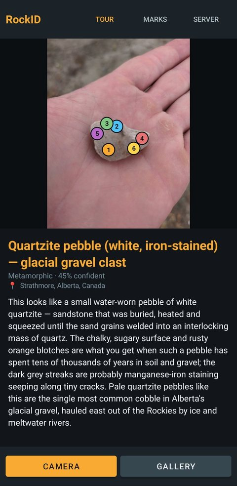
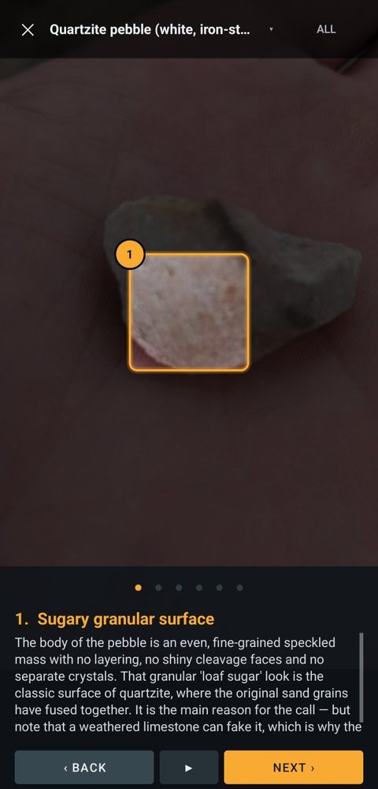
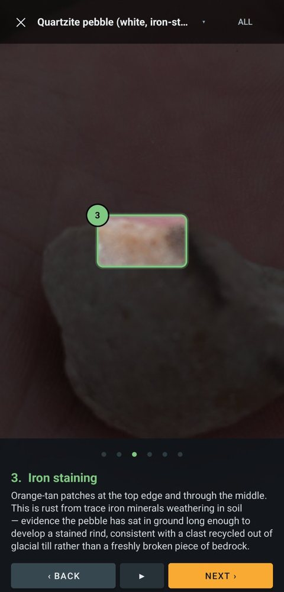

01
RockID
Point your phone at a rock. Get a geologist's walkthrough.
You take a photo and a vision model finds the features: the grain texture, the rusty iron staining, the dark mineral streaks along hairline cracks. Each one comes back as a box on the photo. The app then gives you a guided tour, flying the camera to each feature in turn with an explanation underneath.
- Where you found it matters. GPS is read from the photo, reverse-geocoded, and turned into local bedrock context: native stone, glacial erratic, or beach cobble carried in.
- Built for bad signal. Identification runs as a server-side job. The phone can lock, switch apps or lose the network and the answer still arrives, with cancel and one-tap retry.
- The zoom maths is tested off-device: 4,530 assertions across screen sizes, photo shapes and feature positions.


